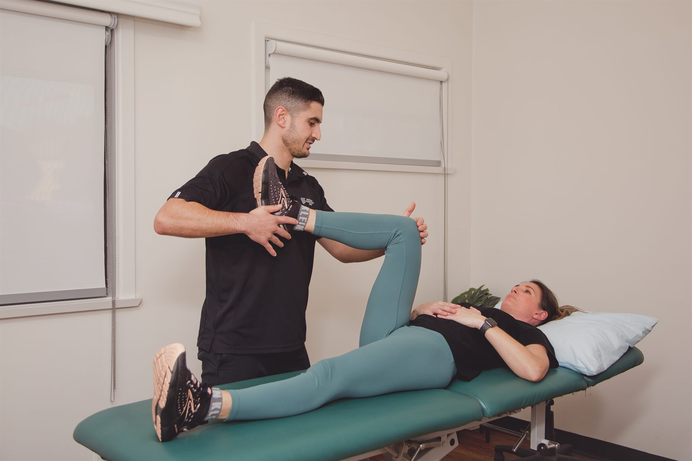

Physiotherapy built around the goals written in your plan — mobility, strength, balance, independence — delivered one-on-one in the clinic or at home, and coordinated with the rest of your support team.

The same clinical work as any other physiotherapy, aimed specifically at the functional goals your plan is built around.
NDIS physiotherapy starts from your plan rather than from a diagnosis. The plan says what you are trying to achieve — to walk further without needing a rest, to get in and out of the car independently, to manage the front steps, to keep working, to stop falling — and physiotherapy is one of the supports funded to help you get there.
So the first appointment is a conversation before it is an examination. We talk about what a good day looks like, what currently gets in the way, and which of your plan goals physiotherapy can realistically move. Then we assess: strength, movement, balance, walking, transfers, endurance, and how you manage the specific tasks that matter to you. From that we set out a program with measurable markers, so you and your plan manager can both see whether it is working.
Sessions are one-on-one and unhurried. Progress in disability physiotherapy is often steadier and less dramatic than in sports rehabilitation, and it is measured in the things that change day-to-day life — an extra hundred metres, a transfer that no longer needs a second person, a month without a fall.
Usually from the Capacity Building budget, under Improved Daily Living.
Physiotherapy is generally funded as a therapy support within Capacity Building — Improved Daily Living. That budget covers assessment, treatment, training and the reports that support your plan. If you are not sure whether your plan includes it, your plan manager or support coordinator can confirm quickly, and we are happy to speak with them directly.
We work with all three. If you are plan managed, we invoice your plan manager and you have nothing to pay. If you are self managed, we invoice you and you claim it back through the myplace participant portal. If you are agency managed, we claim through the NDIS portal directly. Tell us which applies when you book and we will handle the administration from there.
No referral is needed. What helps most is bringing a copy of your plan, or at least the goals section, plus your NDIS number and your plan manager’s details. If you have reports from other therapists — occupational therapy, exercise physiology, speech, a specialist — bring those too, so we are adding to the picture rather than duplicating work.

Sometimes the clinic is the right setting — there is equipment here, space to walk and load properly, and a distraction-free hour. Sometimes it is the wrong one. If the goal is managing your own front steps, getting off your own lounge, or moving safely around your own kitchen, then that is where the assessment needs to happen, and that is where we will come.
We offer home visits across Dapto and the wider Illawarra, including Wollongong, Shellharbour, Berkeley, Kanahooka, Horsley, Unanderra, Kembla Grange and Albion Park. Many participants use a mix: a home visit to set the program in the real environment, then clinic sessions to progress the loading, then a home visit again to check it has transferred.
Access matters and we would rather sort it out before you arrive than after. Tell us what you need when you book — parking, mobility aids, a support worker attending, a longer appointment, a quieter time of day — and we will set the appointment up around it.
A plan review is only as good as the evidence in front of it. Ours is written to be useful, not to be filed.
Plans are reviewed, and the review asks a simple question: are these supports helping you pursue your goals? Answering it well requires more than an assertion that therapy has been going fine. It requires a baseline, a record of what was worked on, objective measures where they exist, and a clear statement of what would happen if the support stopped.
We build that as we go rather than reconstructing it the week before. Assessment measures are recorded at the start and repeated at intervals, goals are written in observable terms, and progress notes track what changed. When your review comes around, we can produce a report that sets out where you started, what has changed, what has not, and what we recommend for the next plan — with reasons.
If your support coordinator or plan manager wants to talk to us directly, that is welcome and usually saves everyone time. Just let us know who to contact.
Areas that come up most often for the participants we work with.
Vestibular physiotherapy for BPPV and balance, plus treatment for neck-related headaches.
Read moreConditionHands-on treatment and targeted exercise for back pain, neck pain and sciatica.
Read moreFunding pathwayWhat an appointment costs, and every way it can be funded — private health, Medicare, WorkCover, NDIS.
Read moreBook an appointment, or call us and we will talk through your plan and what physiotherapy could add to it.